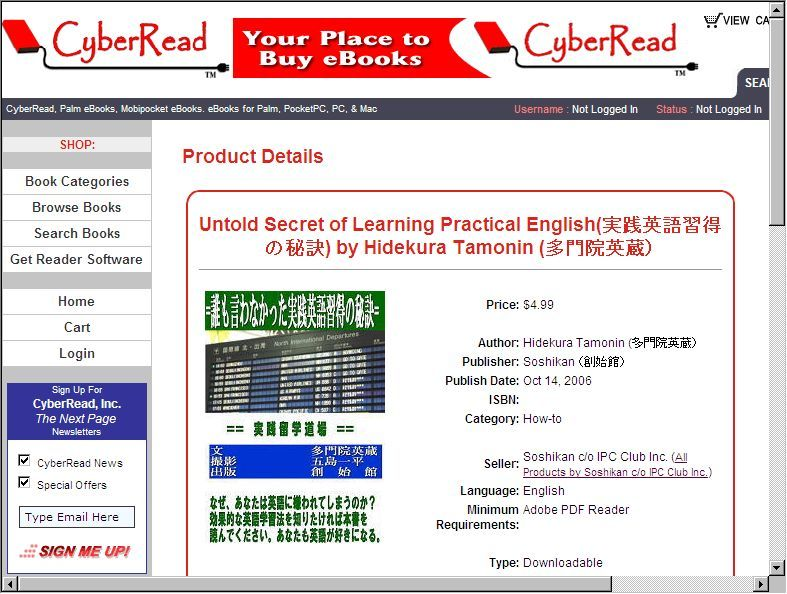
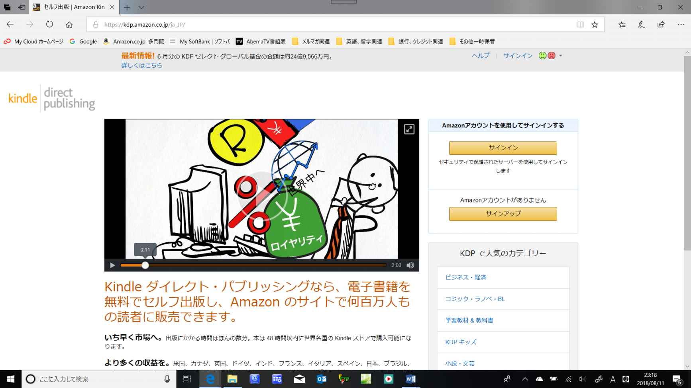
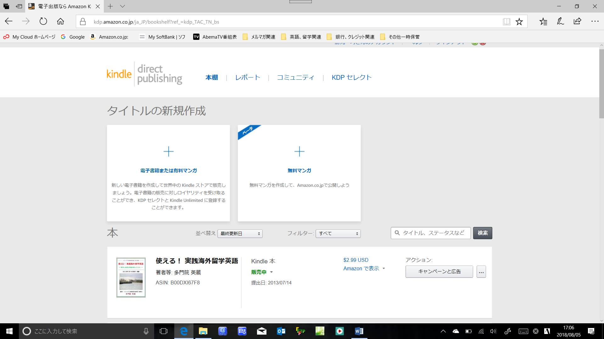
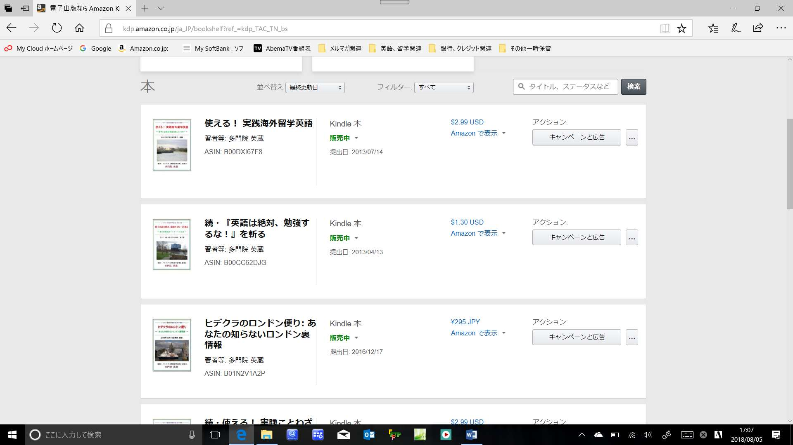
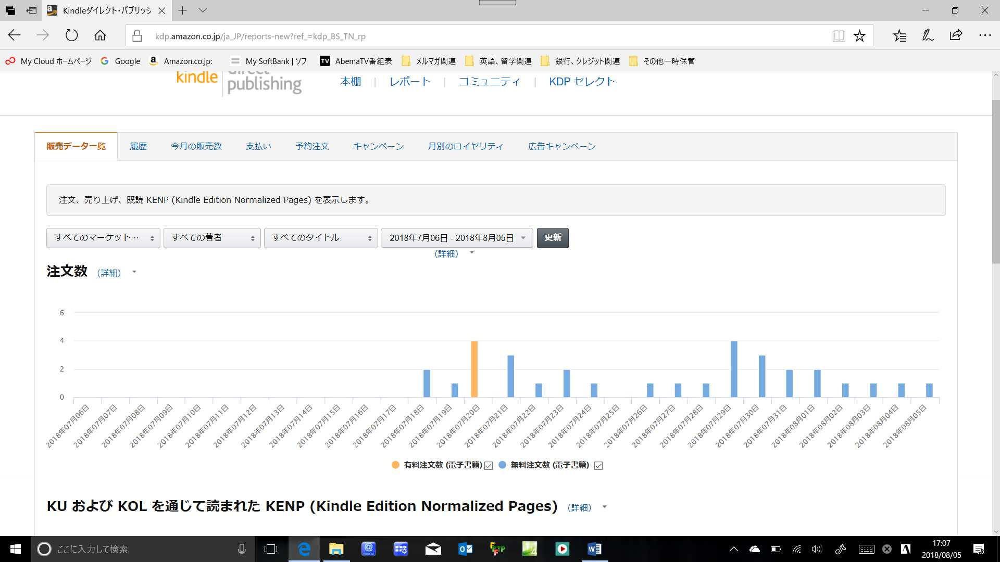

| あなたも分かる電子書籍出版の全て【前編】: ～ メルマガ発行からアマゾンとの出会い迄 ～ | |
| 多門院 英蔵 | |
| Office of Practical Studying Abroad Mail Magazine (2018) | |
=== メルマガ【実践留学道場】オリジナル電子書籍 ===
あなたも分かる電子書籍出版の全て
【前編】
～ メルマガ発行からアマゾンとの出会い迄 ～
===================================================
編著・メルマガ【実践留学道場】道場主
多門院 英蔵
２０１８年８月１２日発行 初版（Kindle版）
本書は、これまで私がメルマガや一般の書籍、更には近年ブームの電子書籍を長年発行し続けてきたノウハウをもとに、メルマガ【実践留学道場】読者からのご依頼やご要望を踏まえて、今回、私の電子書籍出版に至るまでのノウハウを、全てこのアマゾンKindleの電子書籍にて新たに書きおろし、広く読者の皆さんに提供させて頂くものです。
よって、本書のメインは、ご自分の著作をアマゾンKindle電子書籍にて出版されたいと言う方々へのアドバイスやノウハウもさることながら、全く執筆経験が無いが、是非、一度アマゾンKindleにて電子書籍を発行し、広く世界の皆さんにご自分の著作を読んで貰いたい、とご希望の方々にもふさわしい内容となっています。
したがいまして、本書は他に良くあります、単なる電子書籍出版の方法を書いた書籍や、アマゾンKindleでの出版の仕方を単に記載した書籍とは一線を画しています。
本書の構成としましては、目次にもありますように、先ずは、かなり前にブームになりましたメールマガジン、いわゆるメルマガと電子書籍の基本的な違いの説明から入り、また、一般の書籍と電子書籍との違いも説明した後に、実際にアマゾンのＫｉｎｄｌｅ電子書籍を発行するツールであるＫＤＰ（Ｋｉｎｄｌｅ Ｄｉｒｅｃｔ Ｐｕｂｌｉｓｈｉｎｇ）について説明すると共に、このツールを使用しての具体的な電子書籍出版のノウハウを示し、更には、出版後の拡販施策についても、これまでの私の経験をもとに、解説しています。
●【前編】まえがき
前編である本書は、サブタイトルのごとく、～ メルマガ発行からアマゾンとの出会い迄 ～ということで、先ずは私のアマゾンでの電子出版までの経緯を、私のこれまでの経験やノウハウを元に記したものです 。
よって、電子書籍の出版は初めてと言う方から、既にメルマガの発行や電子出版経験はあっても、多くの読者に読んでもらうためにはどのようにすれば良いか分からない、また、アマゾンＫＤＰの活用方法があまり良く分からない、と言う方々にもご満足いただける内容がちりばめられている、と自負しています。
（これらのノウハウは、特に後編になると思いますが、前編にもかなり貴重な情報が埋もれています！）
まえがきよりも、とにかく、先ず本文のほうをご覧になられ、実践できる内容から即実施されることをお勧めします。この 『あなたも分かる電子書籍出版の全て』 が、あなたのご自分の著作を、アマゾンKindle電子書籍として最短で出版される一助となれば幸いです。
尚、本書の【前編】を読まれた方は、是非、近々発売となります【後編】もお読みください！
では本書をお読み後、また、【前編】あとがきでお会いしましょう！
メルマガ【実践留学道場】道場主
多門院 英蔵
http://www.studying-abroad.jpn.org/index.htm
あなたも分かる電子書籍出版の全て
～ メルマガ発行からアマゾンとの出会い迄 ～
目次
●まえがき
【前編】
●前編まえがき
●第１章：自分自身のこれまでの執筆＆出版の歴史
第1-1節：先ずは自分のサイト(ホームページ)作成から？
第1-2節：「メルマガ」発行に至った経緯は？
第1-3節：「メルマガ」から「電子書籍」の時代へ
第1-4節：初めての海外での「電子書籍」出版経験
第1-5節：国内電子書籍出版サイトとの出会い
第1-6節：そして、アマゾンKindleとの出会い
●第２章：電子書籍を出版するために
第2-1節：電子書籍と一般書籍の違い
第2-2節：電子書籍を発行するには？
第2-3節：電子書籍発行の為に一番重要なこと
●第３章：何故アマゾンKindle電子書籍か？
第3-1節：アマゾンのKindle電子書籍とは？
第3-2節：アマゾンのKindle出版システム(KDP)の機能
第3-3節：KDP(Kindle Direct Publishing)の素晴らしさ
●【前編】あとがき
【後編】（目次案です。後日、分冊発行となります！）
●【後編】まえがき
●第４章：著書をKDPで出版するために重要なことは？
第4-1節：KDPで出版前に知っておく最低限のこととは？
第4-2節：誰でも無料でKDPは使える！
第4-3節：KDPで出版する最低限の環境は？
第4-4節：KDP(Kindle Direct Publishing)の活用方法
●第５章：著書を出版検討時に重要なこと
第5-1節：先ずは、オリジナルのネタ準備
第5-2節：そして、出版原稿の作成
第5-3節：出版前に必要な拡販施策とは？
第5-4節：あとはアマゾンKDPに任すだけ！
●第６章：今後の電子書籍出版＆拡販の為に
第6-1節：初めての出版後に為すべきこと
第6-2節：著書の拡販の為に重要なこと
第6-3節：今後の更なるＫＤＰでの出版の為に
●【後編】あとがき
あなたも分かる電子書籍の全て
【前編】
～ メルマガ発行からアマゾンとの出会い迄 ～
本書をお読みの方は、何んらかの形で出版にご興味があおりの方や、近々ご自分の著書をアマゾン等で出版されたい、とのご要望をお持ちの方だと思います。
ただ、はやる気持ちは私も良く分かりますが、ちょっとお待ちください！
その前にご理解頂きたい、重要なことがあります。
本書では、これまで私がどのようにして、一般の書籍や、このような電子書籍を何十冊も難なく発行できるまでに至ったかを、書籍の執筆や出版が初めての方にもわかりやすく解説いたします。
よって、本書は、他に良くあるような単なる電子書籍の出版の仕方や、アマゾンKindle出版ツールの使い方を記した書籍とは異なった内容となっていますので、まず最初にこの点をご理解頂いた上で本書をお読みください。そして、本書をあなたの電子書籍の出版に最大限にご活用ください。
ということで、ちょっと回りくどくなりますが、今後のあなたの電子書籍出版に必ず参考になる情報や、更にインターネットやITに詳しくない方々にも、電子書籍出版とは何かを良く理解できるように、私の長年のメルマガ発行から電子書籍出版に至るまでの経験を踏まえてお話いたしますので、まずはちょっと我慢して（笑）、最初から順にお読みください。
●第１章：自分自身のこれまでの執筆＆出版の歴史
第1-1節：先ずは自分のサイト(ホームページ)作成から？
今の時代は、ホームページよりも、ブログやFacebook等のSNS、更には、携帯でのLine等のコミュニケーションツールが普及しており、また、各企業もこれらの活用がメインとなってきていますので、最近の若い方々には、敢えてホームページと言ってもピンと来ない方もおられるかも知れません。
よって、まずはホームページとは何か、を敢えてここでご説明させてもらいます。
ほんの10年ほど前迄は、まだ、このホームページが全盛の時代で、あちこちの企業の宣伝広告には、このホームページにアクセスするためのURL（ホームページにアクセスする為の住所のようなものです）が記載されていました。
ただ、このURLは大抵ノ場合長く、入力が大変でした。よって、Google等の検索サイトが普及するようになると、検索のキーワードのみが記載され、その後、このキーワードのみで簡単に企業のホームページにアクセスできるようになりました。
では、ここで、この「ホームページ」とは一体何んなのか、を簡単に解説いたしましょう！
（前置きが長くてすみません。ITに詳しい方にとっては、早く電子書籍出版の仕方を説明してくれ、と思っているかもしれませんが、是非、復習の意味で、最初から順にお読み頂き、読み飛ばすようなことはなさらないでください。あとで後悔しますよ、きっと（笑）。）
ホームページとは、何も企業の宣伝の為のモノではなく、我々個人でも誰でも公開できる情報を掲載したネット上の場所（サイト）と思ってもらえれば結構です。
ホームページの定義は以前から色々議論されていますが、難しいことは考えずに、そのように理科してもらえると良いと思います。
よって、発信する情報は何でも結構です。個人の趣味のこと、たとえば写真がお好きな方であれば、ご自分でとられた旅行等の写真を公開したり、時計のコレクションがお好きな方であれば、ご自分の自慢の時計の写真をホームページに公開するのも結構です。
また、家族思いの方は、お子さんの成長の写真をブログ風にホームページに公開されておられる方もいます。
あるいは、研究熱心な方は、ご自分で調べられたことや発見された内容をホームページに記載されています。
このように、ホームページは個人の自由で何でも掲載可能なのです。
それ故、ホームページには正しいこと、正しくないこと何でも記載されており、重要なのは、その記載の信憑性、情報の選択という面で、読まれる方の情報リテラシ（つまり常識）です。
言い換えると、ホームページに書かれていることを何でも鵜呑みにして信じてはいけないということです。これが一番重要なところです。
ただ、企業のサイトは、信用をなくさないためにも、ホームページに掲載する情報はかなり慎重にチェックしていると思いますが、それでも全てが正しいと信じてはいけません。
個人のホームページであれば、なお更です！
ちょっと、ホームページの解説が長くなりましたが、私がこのホームページを開設（サイトに登録）したのは、もう20年以上も前になります。まだ、今のようにブログはなく、また、ホームページ作成ツールもあまりない時代であり、ホームページ作成のために必要な言語（HTML）の勉強から初めて、なんとか公開できました。（その頃は、メールやサイト公開の手段としてAOLを利用しており、その後、現在公開のホームページはツール（有料のホームページビルダーというソフト）を使って作成したモノを、その後追加更新したものです。当初は、もっとシンプルなもので、文章と写真程度の掲載でした！）
何故、電子書籍の前に、このようなホームページの話をしているのか、疑問に思っている方もおられるかと思います。
が、実は、これが今の私が電子書籍を多数出版していることの原点なのです！！
第1-2節：「メルマガ」発行に至った経緯は？
メルマガとは、もちろん「メールマガジン」の略であり、以下、「メールマガジン」のことを「メルマガ」と表現させて頂きます。
では、そもそもメルマガとは何であり、どのようなニーズから生まれたものでしょうか？
そして、何故、私がホームページの作成で終わらずに、このメルマガを発行するに至ったのでしょうか？
ここでは、このあたりの経緯をお話したいと思っています。これが次の節でご説明します「電子書籍」につながりますし、またこの「メルマガ」と「電子書籍」の違いを理解することも重要ですので、もうすこし私の過去のお話にお付き合いください。
メルマガは、かれこれ２０年ほど前に、「まぐまぐ」等の著名なメルマガ配信サイトを切っ掛けとして、団体が一般の方を対象に情報発信や販売物（物理商品や情報コンテンツを問わず）の拡販目的、あるいは、全くの個人がご自分の経験やノウハウを広く世間に知らせたい、
との目的に、かなり普及した電子媒体です。
よって、基本的には、メールと言う手段を使って、読者に発信、配布するのが基本ですが、メールとの一番の違いは、きちんとそのメルマガの目的やコンテンツを読者にあらかじめ知らせた上で、多数の本当に読みたい、受信したい読者の身に、無料、もしくは有料で配布するのがメルマガであり、勝手に読者の許可もなしに、メール配信するのは本当のメルマガでは無いと私は思っています。
というのも、最近は、受信者の許可なしに、勝手に配信される、メルマガまがいのメールが多いからです。全く困ったものです。
よって、本来は自分のメールアドレスをそれなりの意思を持って、自分の読みたいメルマガに提供して、配信してもらうのが本来のメルマガであり、そうすべきです。
私がメルマガを発信しようと決意した背景は、もう２０年ほど前にさかのぼります。かなり前のことであり、タイトルは忘れましたが、英語関連のかなり素晴らしいメルマガを知ったのが、その切っ掛けでした。
そのメルマガは、かなり有益かつ読みやすく、また、内容も楽しく、毎回、そのメルマガが発行されるのを楽しみにしていました！
そして、ある時に、自分のホームページに掲載していました自分の留学や海外出張の体験談を、そのメルマガに投稿し、採用されたのが切っ掛けで、自分もそのような素晴らしいメルマガを是非発行してみたい、と思ったのが、自分自身でメルマガの発行を開始した切っ掛けでした。
それまでは、メルマガの発行なんて、自分では無理だ、と思っていましたが、幸い、老舗の「まぐまぐ」を利用することにより、簡単にしかも無料でメルマガの発行をすることができました。
ちょうど私がメルマガの発行を開始した頃から、メルマガのブームとなり、個人や企業が多数のメルマガを発行するようになり（もちろん企業は宣伝目的ですが）、「まぐまぐ」のような著名なメルマガ配信サイトがたくさん出てきて、個人でも簡単にメルマガが発行できる環境が整い、色々なジャンルの多数のメルマガが、数多く個人や団体から発行されました。
ただ、その後10年以上経過し、携帯やLineの普及もあってか、メルマガ本来の目的や価値観が希薄となり、よほどよく読まれるメルマガ以外は自然廃刊になり、それにともない、いくつかのメルマガ配信サイトも、広告収入が減って配信サイトの維持が難しくなり、閉鎖されたメルマガ配信サイトも多くあります。
実際、メルマガ自体も、私は【実践留学道場】という無料メルマガを、今でも細々ともう20年近く発行し続いていますが、その当時、留学関連のメルマガは多数発行され、私のメルマガなんかよりも読者が多かったメルマガも、その多くは自然廃刊となっています。
（有料、無料問わず、営利を意識せずに、情報発信がメインの純粋なメルマガのみが今も生き残ってるのだと思います。その中のひとつが、２０００年の５月からずっと定期的に発行し続けています、私のロングランメルマガ【実践留学道場】です。ちょっと、メルマガの宣伝になりました（笑）。）
メルマガの話はこのくらいとし、この第1章は、私の電子書籍発行に至る経緯の説明ですので、いよいよ次の「第1-3節：「メルマガ」から「電子書籍」の時代へ」に早速入ります！
第1-3節：「メルマガ」から「電子書籍」の時代へ
私は何かやりたいと思ったら、直ぐに開始しないとたまらない性格であり、前節で書きましたように、良いメルマガを見ると、自分でもすぐにメルマガを発行したくなり、幸い、私は大手メーカのＩＴ関連部門（情報システム部門）に努めていたこともあり、大型コンピュータだけでなく、このあたりのＰＣやインターネットの知識も多少ありましたので、自分でHTMLの
勉強を始めて個人のホームページを即公開したように、メルマガも自分で色々検討し、その当時から一番の大手のメルマガ配信サイトであった「まぐまぐ」さんを利用させて頂き、かつ、メルマガの内容についても、「まぐまぐ」サイトの発行者へのアドバイス情報をフルに活用させて頂き、即発行させて頂いたのが、２０００年５月の創刊号です。
（その当時は意気込みもあり、ウイークリーメールマガジンと題して、仕事をしながらも趣味で、１０年ほどの間ずっと、毎週水曜日に発行していましたが、その後のシンガポール駐在をきっかけに、月２回の発行にさせて頂き、今も、月２回なんとか水曜日に発行し続けています！）
それから早くも２０年近く経過し、世の中の状況も変化し、ＰＣよりも、携帯がさらに進化したスマホ(スマートホン)で何でもできる時代になり、メルマガもＰＣではなく、スマホから読まれる時代になってきました。
すると当然メルマガのスタイルのみでなく、内容自体もそれに合った形にだんだん変化すると共に、そのころから電子書籍と呼ばれる、メルマガよりももっと内容の濃い書籍が、ＰＣやスマホでの読者を対象に出版されるようになりました。
その時代の流れを先取りしていたある出版編集者の方から、私のメルマガを読まれて自分の留学経験や実践英語の習得経験を電子書籍にして出版しないかとのお誘いがあり、私から原稿や写真のネタを提供し、これをもとに編集＆校正して頂け、立派な電子書籍ができあがりました。
これを、その当時日本でも始まりつつあった楽天やビットウェイブックス等の電子書籍サイトに登録して頂けましたが、あまり思ったほども売れなかったと思いますので、もう今は検索しても出てこないかもしれませんね～？
随所に写真もおり込まれた、また、これまでの私の留学実現や英語習得のノウハウが満載された、本格的な著書(私の一番最初の電子書籍)だったんですが(笑)。
もう１０年以上も前の著書で、無名の著者の著作と言うこともあり、あまり売れませんでしたので、今はもうネットでも売っていないかもしれませんが、因みに、著書名は『誰も言わなかった実践英語習得の秘訣』というタイトルの電子書籍でした。
その当時、余り電子書籍が普及しなかった原因の一つに、その頃はまだスマホが普及しておらず、従来の携帯電話ではこれらの電子書籍は読みずらく、また、当時はまだ多くの方がこのような電子書籍のことをあまりご存知なく、米国等の海外では電子書籍のサイトが多数出てきており、著名な著者の書籍もこれらの電子書籍販売サイトで売られていましたが、日本でこれらの電子書籍が多く読まれるようになったのは、電子書籍専用端末が出るようになって以降だと思います。楽天やアマゾンが出した専用端末がその典型的な例です。
第1-4節：初めての海外での「電子書籍」出版経験
一方、まだ日本では電子書籍が普及していない時代に、米国では電子書籍サイトが数多く出来ており、結構色々な書籍を電子書籍として、ＰＣや携帯で読むことができていました。
そして、その電子書籍サイトでは、一般の著者の著書の出版も可能なようであり、上記の出版編集者の方からそのサイトで電子書籍を出版してみないかと誘いがあり、私のこれまでの海外対応の経験から、いくつかの米国の電子書籍販売サイトを調査し、そのうちのいくつかのサイトに契約のアプローチをかけ、CyberRead等の２社と契約が成立し、先ずは、国内で販売していました私の著書を登録販売し、その後、何冊かの歴史写真集を私が説明を英語に翻訳し、このCyberReadで結構何冊も販売していました。
これが世の中の電子書籍の始まりと共に、私が自ら米国の電子書籍出版サイトと契約し、いくつかの電子書籍の販売を開始したはじまりでした。もう１０年以上も前のことです。
丁度その当時CyberReadで販売されていたサイト画面のキャプチャーがありましたので、ちょっとご紹介させて頂きます。
もう今は、そのCyberReadのサイトは、残念ながらその後あまりビジネスが上手く行かなかったのか閉鎖されているようです。

第1-5節：国内電子書籍出版サイトとの出会い
私の電子書籍との関わりで、アマゾンKindleとの出会いの前に、まだ述べておかないといけない重要なことがあります。
それは、冒頭で述べましたメルマガ【実践留学道場】を毎週毎週７～８年間も発行し続けていた頃、自分でもびっくりするくらいの分量の英語や留学関連のノウハウがたまっていたことです。
当初は、これらを自分のホームページ（趣味のWEBサイト）に掲載していましたが、ある時に、「でじたる書房」という誰でも簡単に自分の著書を、公に電子書籍「でじブック」として販売してくれるサイトがあることがわかり、結構なノウハウをいくつかの書籍に再編集し、サイトに売って頂き、売れるごとにいくらかの販売料がはいり、それなりに電子書籍の出版、販売ノウハウも結構たまりました。有料でしたが、販売キャンペーン等のオプションツールもありましたので、時々利用させて頂きました(笑)。
しかし、やはり規模的な理由、そして私の著作の内容や著名度も理由のひとつとして、その後あまり売れなくなり、その後、自然と有料の電子書籍からはしばらく離れ、無償(笑)のメルマガ【実践留学道場】の発行に勤しんでいました。
（やはり、普通の紙の、通常の書店で販売される書籍を執筆しないと売れないのかな、とも思いながら、、、、。）
その後、米国以外の東南アジアや、欧州への駐在経験等も経験でき、更なるノウハウをメルマガ【実践留学道場】メルマガに執筆し、もう１０数年間もメルマガを発行し続けていた頃に、日本のある出版社との出会いがきっかけで、TOECI関連のノウハウ書を紙の書籍として共同出版のような形での販売オファーがあり、少しお金はかかりましたが、自分の著書が立派な書籍となり、一般の書店で販売されることに魅力をもち、出版を決意しました。
が、やはり電子書籍と異なり、一般の紙の書籍は、何度も校正がはいったり、表紙の検討もあったり等々、出版までに結構な日数と手間がかかりました！
しかし、まあ、これは良い経験になったと思います。一般の書店のみでなく、アマゾンや楽天、その他の著名なサイトでも販売され、書籍固有のISBN番号がついて、国立国会図書館にも保管されています。
因みに、国立国会図書館にある書籍は、いつでも、書籍のコピーを有料で申し込むことができます。
（私も、テスト的に、自分の著書を国立国会図書館のサイトで検索し、数ページをコピー申し込みしました(笑)。コピー費用を銀行振り込みで、海外にも送ってくれました！）
ただ、その紙の書籍はあまり売れず、あまり売れないと増刷も無く、今は在庫が無いようですが、アマゾン等のサイトでは、私の名前で検索すると新品や中古を扱っている業者から買えるようです。
(通常、中古品は安いですが、もともとの販売価格よりも高いプレミアがついて売られている私の著書の新品があるのは嬉しいと言うか、何んか変な感じですね～。)
尚、私の家には、出版当初、著者分として頂いた新品の書籍、『実践ＴＯＥＩＣ道場 あなたも取れるきっと取れる新ＴＯＥＩＣで９００点！』がまだ何十冊もありますので、実際の定価よりもお安く譲らせて頂きますよ（笑）。
（でも、送料がかかるとあまり安くなりませんよね？ 是非、アマゾンで程度のよい中古品をお安く買われて下さい(笑)！）
ということで、一般の紙の書籍の出版は大変ですが、その頃、初めて米国のアマゾンがKDPという出版システムをリリースし、これにより、しろうとでも、あの有名なアマゾンで電子書籍を全世界向けに出版出来ることを知りました！
これが私とアマゾンとの、電子書籍出版での出会いでした！！
第1-6節：そして、アマゾンKindleとの出会い
冒頭に書きましたように、私はやろうと思うとすぐにやらないと我慢できない性格であり、
さっそくそのアマゾンKDP(Kindle Direct Publishing)のことを調べました。
その当時は、日本のアマゾンはまだ日本語のKDPサイトを提供しておらず、必然的に米国のアマゾンと契約しての、英語のKDPシステムでの出版になります。
ここで、私の英語力や、これまでの米国電子書籍サイトとの契約経験が活きて、難なく米国アマゾンのKDPですぐに自分の最初のアマゾンでの最初の著書「あなたも読めるペーパーバック！」（だったかな？）が、米国アマゾンから世界に発売されました！
最初に出版の認可がおりるまでは、日本のアマゾンでの出版も同様ですが、自分のオリジナルの著書であることの証明、更には、同じものがサイトに他の経路で公開されていないことの証明が必要ですが、何度かの米国アマゾン担当者との英語でのやり取りののちに、これも難なくパスし、世界のアマゾンのサイトに自分の著書が公開された時には、嬉しかったと共に、簡単に出版登録でき、かつ、その後の販売実績の管理や、価格等のメンテ、更には、キャンペーンの実施までも簡単にできるKPDのシステムに、ITの世界にかかわっている自分として、感服した次第です！
その後、さほど年月もたたない間に、日本のアマゾンでも日本語版のKDPがリリースされました。
そして、日本のアマゾンから日本語版のKDPシステムがリリースされてからは、日本のアマゾンが提供しています日本語のKDPで何冊かの電子書籍を出版していましたが、そこでちょっと問題が発生しました。
というのも、日本のアマゾン（Amazon.co.jp）でも、KDPで出版すると日本のサイトのみでなく、全世界のアマゾンのサイトで電子書籍が販売されますので、私が米国のアマゾンと日本のアマゾンの両方で電子書籍の出版をするのはマズイというか、認められていないとの連絡が日本のアマゾンから入り、以前から公開されていました米国アマゾンでの電子書籍の販売は中止することになり、同様の電子書籍はその後、日本のアマゾンのKDPからのみの出版となりました。
まあ、私のほうは、最初はちょっと面倒でしたが、今は全く問題ないどころか、アマゾンKindle自体のキャンペーン等のコントロール自体は米国時間での運用となるようですが、書籍の審査や登録確認は、日本のアマゾンで実施されるのか、以前よりも新刊登録からリリースまでの時間が凄く早くなり、逆に助かっています！
前節でも少し書きましたが、自分のオリジナルの著書であることの証明等々で最初は、KPDに登録してからサイトに公開されるまでは、何日かかかりましたが、２０冊以上もアマゾンで出版している今では、登録からほんの数時間、早いときには、１時間くらいでリリースされた時もありました。本当にアマゾンの速さにはびっくりです！
皆さんも同じ意見だと思いますが、ご自分の著書が完成した際には、出来るだけ早くサイトに登録し、出来るだけ早く多くの読者の皆さんに読んでいただきたい、というのがご感想ではないでしょうか？
そういった意味でも、アマゾンKDPのシステムの素晴らしさ、更には、このKDPをオペレーションされて、電子書籍の審査登録をされているアマゾンの皆さんには頭が下がります！
ということで、ここまでは、自分の経験、体験談をもとに、アマゾンKindleとの出会いまでを書きましたので、次章ではいよいよ電子書籍を出版する為のノウハウに移りましょう。
●第２章：電子書籍を出版するために
第2-1節：電子書籍と一般書籍の違い
既に書きましたように、電子書籍と一般の紙の書籍とは、執筆＆出版するサイドから見ていくつかの大きな違いがありますので、まずこのあたりを良く理解しておく必要があります。
比較しやすくするために、紙の書籍を「紙」、電子書籍を「電子」と表記します。
（１） 紙 ― 執筆が完了してから出版完了までに、
かなりの時間がかかる。
電子 ― 執筆完了後、比較的短時間で数日後には、
出版可能！
（２） 紙 ― 誤字や脱字を発見しても、印刷、流通後は、
変更不可能であり、その次の版にて訂正する
しか方法がない。
電子 ― 誤字や脱字が見つかっても、比較的容易に、
再度出版が可能。
特に、出版後重要な間違いが見つかった場合でも、
即訂正して更新後の版の出版が可能。
（私の場合、電子書籍は、ネタやアイデアがあると、
すぐに数十ページ執筆し、表紙も自分で作成して、
即出版したくなりますので、結構、出版後、自分で
誤字脱字を見つけたり、読者の方からの指摘があり
ますが、これには、即第２版として登録できますので、
便利です。）
（３） 紙 ― 印刷物の流通、出版に経費がかかるので、
著者のもらえる印税が少なくなる。
電子 ― オンラインサイトでの販売等で比較的容易に
販売できるので、著者がもらえる印税比率も
紙の書籍に比べて多くなる。
（４） 紙 ― 通常、出版社が販売を仕切っており、流通上の
管理番号（ISBN番号）を取得しないと書店での
販売が不可。
電子 ― 特に販売上の制約はなく、オンライン販売サイト
の判断により比較的容易に販売することができる。
（５） 紙 ― 出版編集者の支援無しに、個人での販売はほぼ
不可能。
電子 ― アマゾンKindle等のツールを使って個人でも、
比較的容易に出版できる。
以上、紙の書籍に比べて、電子書籍の良いばかりとなってしまいましたが。電子書籍も紙の書籍に比べて劣る点もいくつかあります。
紙の書籍のメリット ― 電子データと違って、実際のモノが
目に見える形で残るので、贈り物としてや保存の
際に、明確になり、所有感を味わえる。
電子書籍のデメリット ― 上記の逆になりますが、それ以上
に、執筆＆出版する人にとってのデメリットは、
電子書籍故に、ITや電子データを扱う知識が
ないと出版が難しい。特に、執筆者が自分で、
KDP等のツールを使って出版する際には、
文書作成や表紙作成でPCの知識が必要となる。
というように、電子書籍は紙の書籍に比べてメリットが多いことは事実ですので、今後、更に普及する可能性は大です。
では、次にこの電子書籍はどうすれば発行することができるのかを、これまで述べました私の電子書籍出版の事例をもとに、次の節でご説明しましょう。
第2-2節：電子書籍を発行するには？
既に書きましたように、これまでメルマガを発行されていたり、ブログ等でご自分のアイデアや考えを公開された経験がおありで、既に何らかのネタをお持ちの方は、すぐに電子書籍を出版することができます。
ただ、それにはいくつかの注意が必要ですので、この節では、このあたりを、順を追ってご説明しましょう。
（１） 執筆したい内容やアイデア、特にどのような読者むけに執筆公開するのかを、まず明確にする。
（２） 書きたい電子書籍のタイトル（サブタイトルも含む）を考える。
（３） 次に、出版タイミングや価格を決めるために、どの程度の分量になるかをざっと見積もる。このためには、まず目次を考える必要があり、私の場合は、まずは、全体の章構成をいつも先に考え、その次に各章を、更に節にブレイクダウンしてゆきます。
（４） ひととおり全体構想ができた段階で、（２）のタイトルに合った内容かをレビューし、必要に応じて、章構成や、節の構成も見直します。
（この段階で、若干、書籍のタイトルや、サブタイトルをより明確に内容が伝わる形に変更するケースもあります！）
（５） 全体の構成がまと待った段階で、これまでのネタやあらたな構想をもとにあとはPCに向かってただひたすら執筆するのみです！
（私の場合は、英語関連の書籍が多いので、ＷＯＲＤの横書きでいつも執筆していますが、縦書きの書籍も多いです。）
また、この段階で、私もいつも「まえがき」を本文よりも先に書きます。その理由は、この「まえがき」により自分自身も執筆する内容や主旨が明確になるからです。
（６） 電子書籍ですので、文章だけでなく、必要に応じて図や写真、イラスト等も簡単に挿入できますので、これらも織り交ぜて執筆すると、より内容が分かりやすく、また、読みやすくなって良いと思います。
（私の過去の書籍は、ただ文章だけのモノが多かったのですが、最近は、文章の文字に色や強調をつけるだけでなく、少しは写真や図も織り込むように心がけています（笑）。）
（７） 一応、最後まで完成した段階で、今後は「あとがき」を書きます、これも、「まえがき」を書いたのと同じ理由で、自分自身の執筆内容の振り返りと、あとは、読者への自分の書籍の更なるＰＲと、他の著書の宣伝も兼ねています！
（８） もし、この段階で全体の分量が少なく感じるときは、各章や節を読み直し、追記修正し、最終的に全体のボリュームが確定します。
（９） あと、上記と平行し、電子書籍の場合、特にアマゾンＫｉｎｄｌｅ等に登録する際には、表紙の登録も必要となりますので、本文の執筆中に暇を見て、表紙を作成する必要があります。
ここで、第１章の自分に経験のところでも書きましたように、私のこれまでのメルマガ発行や国内外の海外電子書籍書店向けに色々自分で表紙等を作成した経験および、ＩＴやＰＣのスキルが役立ちました！
（私の場合、マイクロソフトの標準のＷＯＲＤで文章を執筆し、表紙も標準でＰＣについていますマイクロソフトの標準ソフトの「ペイント」で、いつも統一した表紙を作成していますので、何も特別なソフトは不要です！）
（１０）あと、もう一つ執筆上の重要な留意点があります。それは、引用です。
もし、一部他人の公開可能な文章等を引用する場合は、必ず出所（これを出典といって、論文等の執筆の際には、必ず記載する必要があります）を記載する必要があるということです。
正式の論文等であれば、最後にまとめて出典一覧等々で記載することもありますが、電子書籍の場合、そこまで堅くなくても、他人の文章を引用する場合には、必ず、それが誰の引用か、またどの部分がその引用部分かが分かるように本文中に明確に記載する必要があります。
（私の場合、メルマガ等でも良く、あの有名な、そして尊敬しています、千田潤一さんの著書やお言葉を引用しています。たとえば、過去、以下のような形でのメルマガで引用しています。ちょっと長くなりますが、記載例として引用しておきます。）
【以下は、私の過去のメルマガ【実践留学道場】での、他の人の文章の引用例です。
これが完璧な引用例とは言えませんが、ご参考にはなると思います。
要は、引用される相手にも敬意を払い、双方が納得が行くような形での引用が重要と思われます！（下記のメルマガ本文中で、茶色部分が引用箇所です。）】
～～～～～～▼～～～～～～☆１☆の始まり～～～～～～▼～～～～～～～
『ヒデクラのＴＯＥＩＣ高得点秘話』（第14話）
＝＝＝＝＝＝＝＝＝＝＝＝＝＝＝＝＝＝＝＝＝＝
このコラムでは、単にＴＯＥＩＣで高得点を取得するためのノウハウ
だけでなく、どうすれば効果的に実践英語力を身につけて、その結果と
して、ＴＯＥＩＣで高得点を取得することが出来るか、といったような
感じで、毎回テーマを決めて書いています。お気楽にお読み下さい。
いよいよ今回は最終回です。では、早速開始しましょう！
－－－－－－－－・－－－－－－－－・－－－－－－－－
●第14話：【最終回】ＴＯＥＩＣダイアリーのご紹介
英語上達の為には、トレーニング経過チェックリストのような
ものを作り、いつ、何を実施したかを記録することが重要です。
私は、『ＴＯＥＩＣテスト英語学習ダイアリー』と言う書籍
を買って、これに毎日の英語トレーニング記録やＴＯＥＩＣの
受験記録をつけて管理していましたが、別にこれでなくても、
何でも良いでしょう。
目に見える形で、自分のやったことを管理することが、モチ
ベーション維持のために重要です。
最終回の今回は、効果的な英語学習の継続に役立つ、
『ＴＯＥＩＣ ＴＥＳＴ 英語学習ダイアリー』をご紹介致します。
『ＴＯＥＩＣ ＴＥＳＴ 英語学習ダイアリー』
（副題：英語トレーニング支援ツール）
[著者：鹿野晴夫、監修：千田潤一、発行：丸善株式会社]
【定価：本体１，０００円＋税】
この書物（というよりも、手帳のような感じの本ですが）は、英語
学習の継続的な実施、記録をベースとして、英語力の向上を目指す人
の為の効果的なツールとなるべきモノです。
カバーには「ＴＯＥＩＣ ＴＥＳＴスコアアップの秘密兵器、あの
"幻のダイアリー"がついに登場！」と書かれています が、ＴＯＥＩＣ
の点数向上のみでなく、留学を目指されてＴＯＥＦＬ受験の準備を進め
られている方にとっても点数向上の強力なツールになると思います。
先ず、聞きなれない"英語トレーニング"ということについて、ここ
で少し説明しますと、英語もマラソンと同じように地道なトレーニング
を重ねないとけっして上達しません。
逆に、頑張ってトレーニングを継続すれば、確実に英語の力は向上し、
その結果がＴＯＥＩＣやＴＯＥＦＬの点数に表れてきます。そして、
その地道な英語トレーニングを継続実施する上での手助けとなるのが、
この「英語学習ダイアリー」なのです。
構成としては、前半に英語学習ダイアリー活用の仕方やトレーニング
時間と成果の関係等々がＴＯＥＩＣを例として詳しく解説されており、
後半は実際に学習者が日々のトレーニング結果を記録する、１年分の正
に「ダイアリー」となっています。そして、最後のほうには、「英語
トレーニングセルフチェック」として、トレーニング時間やＴＯＥＩＣ
テストスコアの分析シートがついています。
私からの冗長な解説に代えて、以下、カバーに書かれています、
「"幻のダイアリー"誕生秘話」を引用します。
『 日本国内で英語を身につけた人にはひとつの共通点があります。
それは毎日英語に触れる習慣を確立し、何千時間、何万時間の
累積を経ていることです。
しかし、日本国内で英語に触れつづけることは、ある意味で
不自然なことです。「不自然なことを続け、習慣化するために
何か良い方法はないものだろうか？」、そんな切実な思いから
このダイアリーが誕生しました。
目的達成の秘密は、トレーニング記録をつけることでした。
自分自身を最後まで励まし続けてくれるのは自分だけです。
記録をつけ、努力のあとを確認しながら自分自身を励まして
頑張ってほしい。そんな思いから、1993年、全国大学生協連の
オリジナル商品として「英語学習ダイアリー」の第１号が発売
されました。
発売数年を経て、これで英語をモノにした学生が全国に続々
と登場するにつれ利用者は急増し、授業や学校単位で採用する
ケースも多くなりました。』（以下、省略。）
この素晴らしい「英語学習ダイアリー」は、当初大学の生協での隠
れたベストセラー商品であり、あまり世間では知られていないようで
あり、私も以前たまたま本屋で見かけたのがきっかけですが、その時
に即、購入し、正解でした。
「百聞は一見にしかず」、まずは本屋にて詳細をご覧下さい。
（アマゾンや楽天のＷＥＢ書店でも買えると思います。）
気に入って購入したならば、あとは、活用して英語のトレーニングを
継続するのみです！
英語のトレーニングも「継続は力なり」です。そして、
「英語上達、王道無きも、近道あり！」
是非、この言葉を念頭に、頑張って下さい。ＴＯＥＩＣ９００点
突破、それ以上の英語力が、一歩一歩近づいてきますよ！
～ 完 ～
－－－－－－－－・－－－－－－－－・－－－－－－－－
以上が、私のメルマガの中での引用例ですが、ご参考までに、最後のフレーズ「英語上達、王道無きも、近道あり！」は、５－７－５の川柳風に作成しました私のオリジナルフレーズですので、読者の方は引用なさらないでください！（これは冗談です。引用大丈夫です（笑）。）
このステップ迄くれば、もう電子書籍が完成したのも同様で、一般公開までもう一息ですが、その前に、まだまだ忘れてはならない重要なことがあります。
これは執筆自体よりももっと重要ですので、次の節でじっくり説明しましょう。
第2-3節：電子書籍発行の為に一番重要なこと
ここまではどちらかというと電子書籍のコンテンツ執筆に関してのお話が中心でしたが、ここからは如何にして電子書籍を発行するか、つまりどうすれば電子書籍として自分の著書を発行して読者に届けることができるのか、を中心にお話ししましょう。
既に第１章から順に読まれた方は、ご推察できると思いますが、自分の著書を電子書籍として出版するためには、一般書籍を出版社やその編集者の方が支援してはじめて発行できるのと同様に、電子書籍でもそのプロセスが必要です。
しかし、そのプロセスは一般の紙の書籍と、電子書籍では全く異なり、電子書籍の場合はシンプルですが、それ故に著者自らがやらないといけない事柄がたくさんあります！
ここでは、いよいよ出来上がったご自分の著書を電子書籍として出版公開する前の例を、一番安く効果的にできる例としてご説明したいと思います。
ただ、冒頭のまえがきでも少し書きましたように、アマゾンのKDPでの具体的な出版の方法、ノウハウは本書の続編である【後編】あるいは、他の方々が多く書かれている内容をご参考にして頂くとして、ここでは、アマゾンKindle電子書籍での出版を例にとり、著者がなすべき重要な事柄を以下、ご説明いたします。
（１） 前節でも書きましたように、電子書籍のボリュームに応じた値決めが必要であり、これが結構重要です。
⇒電子書籍の場合、たいてい紙の書籍よりも文章が少ないケースが多く、また、流通経費も安いので、その分書籍の価格も安くする必要があります。皆さんも感じると思いますが、実際に紙でなく、ダウンロードして読むまで内容を確認できない媒体にあまりお金を使いたくない、というのが実感ではないでしょうか？ 私はそう感じます。よって、値決めは重要です。特に、アマゾンKindleは世界中で販売され、かつ執筆者に支払われる印税（つまり著者がもらえるお金です！）も、電子書籍の価格により、２段階で３５％と７０％というように大きく変わりますので、その値決めのバランスは重要です。安い書籍だと３５％しかもらえませんし、逆にあまり高いと書籍自体を買ってもらえませんので。（ただ、Kindle電子書籍の価格は、各国のアマゾンのサイトごとにKDPで価格を変更できます！ KDPは凄いシステムですね。）
（２） もう一つ重要なのは、前節で、表紙も自分作成しないといけないと説明しましたが、これ以外にも、著書の紹介文や、書籍のジャンル定義等々、その他諸々決めないといけないことが多々あり、これらも出版後の拡販に影響しますので、凄く重要です。
（３） 最後に、重要なのは、アマゾンKindleの場合、KDPシステムにアクセスしないと出版登録できませんので、その登録自体が必要です。Amazon.co.jpのアカウントをお持ちの方は、そのID、パスワードでKDPにも登録できます。ただ、KDP登録時に、色々追加登録すべき情報（出版支払いを受けますので、当然です！）があり、また管轄しています米国にも色々申請すべき情報がありますが、このあたり全てKDPシステムの中で完結しますので、ご安心ください。英語も不要です。（このあたりもさすがアマゾンです！）
⇒良く、これらの手順が分からない人の為に（というか、この手の初心者から儲けようと）アマゾンKDPでの電子書籍の出版代行でかなりの手数料を取っているところもあるようですが、ちょっとPCを使いこなせる人であれば、全く問題なくご自分で登録できますので、そのようなところに頼らなくても大丈夫です。
アマゾンKDPの概要や出版のメリットは、この次の章でお話ししますが、米国当局への税金関連の申告が必要といえど、また、英語が得意でなくても、日本のアマゾンKDPシステムでは、全て日本語で申請できるようになっていますし、また何か不明点があっても日本のアマゾンの担当者が日本語でサポートしてくれますので、大丈夫です。
また、次章で書きますが、出版後の販売状況の確認も、ご自分で登録していれば、ほぼリアルタイムで売れ行きを確認したり、価格の変更や、版の変更も随時ご自分で自由にできるので、仲介者に頼る必要は全くありません。
では、いよいよ次の第３章にて、アマゾンKindle電子書籍および、その（無料！）出版システムである、ＫＤＰ（Kindle Direct Publishingシステム）の全貌に迫ることにしましょう！
●第３章：何故アマゾンKindle電子書籍か？
第3-1節：アマゾンのKindle電子書籍とは？
既に皆さんご存知のように、今ではアマゾンKindle電子書籍を知らない人はほとんどおられないと思いますが、電子書籍が出だした頃は、電子書籍とはどういうモノかを知らない人も多数いました。
ただ、今でも、アマゾンKindleは特別な機器でしか読めないと思っている人もいるようですが、そのようなことはありません。
たしかに、Kindle Fire HD等の専用端末であれば、読めるのは当然ですが、他のスマホやPCでも専用のソフト（無料！）をインストールすることにより、誰でもKindle電子書籍を読むことができます。
というように、電子書籍と言っても色々あり、まだ良くご存じない方もおられるかと思いますので、まずは、このあたりから復習しておきましょう。
第１章でも既に書きましたように、電子書籍とは、一般の紙の書籍と対比して言われている書籍であり、その形態、特に、電子書籍の提供フォーマットは色々あります。アマゾンのKindle電子書籍が特別なソフトが無いと通常のスマホで読めないのも、そのフォーマットの一つであるからです。
また、他の電子書籍、たとえば、第１章で書きました、デジタル書房の「でじブック」のフォーマットもPDFであっても簡単にコピーできないようにプロテクトのかかったフォーマットで提供していたと思いますし、他にもこのようにコピープロテクトをかけた形での提供形態が多いのが電子書籍の特徴です。
それはどうしてでしょうか？
多分、皆さんももうお分かりかと思いますが、何もプロテクトがかかっておらず、簡単にコピーできてしまうと、電子書籍であるが故に、一度ダウンロードしてしまえばいくらでも複製が可能となってしまうからです。
他にも特別なフォーマットでコピーのプロテクトをかけている色々理由はあると思いますが、このような不法コピーは他の音楽やDVDソフトのように違法ではあり、電子書籍も同様です。
ちょっと、話が本題からずれましたが、このように電子書籍を提供、販売しているサイトはいまではアマゾンや楽天以外にも色々ありますが、私がアマゾンKindleで自分の著書を提供している理由はいくつあり、その主なものは以下です。
（１） アマゾンでは、Kindle Direct Publishing（略して、KDP）という、
誰でも簡単に著作を簡単に登録販売できるシステムを提供している。
（２） 自分で出版のコンテンツ（アイデアやネタのことです）があれば、誰でも
出版社や編集者に頼らずに、自分の著作を無料で出版できる。
（３） アマゾンでは、自分の著作を日本のみでなく、全世界のアマゾンのサイトから
販売でき、その印税（ローヤリティーと呼んでいます）も、各国のアマゾンサイト
から、日本での登録口座に毎月、自動的に支払われる。
（４） とにかくKDPの機能が優れており、誰でも簡単に出版登録ができる。
（これが、私がアマゾンKindleを好いている、一番の理由かもしれません！
このあたりは、次の節でじっくりご説明します！）
ということで、他にもアマゾンKindleで出版するメリットは色々ありますが、KDPの機能も含めて、これらの詳細は、次の節でじっくりご説明しましょう。
第3-2節：アマゾンのKindle出版システム(KDP)の機能
KDPとは、Kindle Direct Publishingの略称であり、アマゾンが、一般の著者の為に、Kindle電子書籍を出版登録するためのツールとして無料提供しているツール（URLサイト）のことです。その名のごとく、著者が直接出版できる、という意味も含めたシステムです。
既に、ご説明しましたように、このKDPシステムを利用して、我々著者は、著名な著作と同様、アマゾンのKindle販売サイトに、自分の著作を簡単に、しかも無料で登録することができます。
ここでは、このKDPの主な機能のいくつかをご紹介し、具体的なKDPを利用しての出版やその後の拡販、出版状況の管理の仕方は、【後編】に譲ることとしましょう。
私もこのKDPを利用して、これまで２０冊以上ものアマゾンKindle電子書籍を発行させて頂いていますが、KDPは時々バージョンアップ（機能の追加拡張）が行われており、私自身も必ずしもKDPの全貌を押さえているわけではありませんので、まずは、このことをご了解願います。
（このあたりは、多分KDPを使って出版代行をされておられる方の方がお詳しいと思いますので、多数アマゾンKindleでも登録されていますような、これらの電子書籍をお読みいただければ良いかもしれません。すみません！）
ただ、ここで私が言えますのは、私自身が当初の米国アマゾンが提供していましたKDPを利用しての出版経験があり、またそれを受けての日本語版のKDPも、もう何年も前から使って著書の出版やキャンペーンも含めた販売管理を何十冊もしており、ある程度の最低限の機能やノウハウは理解しているとの自負はありますので、ここではそのKDPの素晴らしい機能のいくつかを、まだKDPについて全くご存じのない方が、今後アマゾンのKDPシステムを利用して、ご自分の著書をKindle電子書籍として出版される際に参考になるように、そのいくつかをご紹介することとします。
（時系列に、ＫＤＰを実際に出版登録で使うイメージで順を追ってご説明します。）
（１） PC（メルアド含む）およびインターネットにアクセスできる環境があれば、誰でもKDPシステムを利用することができます。
（これはさすがに、携帯やスマホでは厳しいと思います。PCのスペックは問いませんが、マイクロソフトのＷＯＲＤやペイントが普通に動くＰＣであれば、問題ありませんが、高機能であればあるほど、ストレスなく、スムーズに執筆や出版登録ができると思います。）
（２） まず、アマゾンというか、KDPのアカウントの登録が必要ですが、これが終われば、あとはKDPのガイドラインに沿って、必要情報の登録や出版原稿の登録をすれば
良いだけです！
ここで、あまり文章だけだとイメージがわかりにくいとおもいますので、実際のＫＤＰの
画面イメージをいくつかお見せしてから、残りの機能の説明にはいります。
では、ログオンの初期画面および、ログオンしてからの私の既に登録済みの電子書籍の一部および、その販売状況の画面を実際に、以下にお見せします。
（2画面目以降は、アマゾンKDPの公式サイトからの、私のIDでログイン（サインイン）後の引用画面です。KDPのサイトは、以前に比べてまた少し洗練されたようです！ 為念。）
まずは、ログイン初期画面です。 （ Kindl e の宣伝の動画も写っています！）

次に、ログイン後の私の登録済み電子書籍の画面を、２枚ほど引用です。


最後に、販売実績のレポート画面です。（現在、キャンペーン中で、有料と無料の両方の書籍の販売数が見れます。当然、無料の書籍の販売数（ダウンロード）数が多いですが（笑）。）

これでＫＤＰのイメージは、大体おわかりいただけましたでしょうか？
（３） 実際に執筆済みの書籍を登録する機能も豊富です。
（本文、表紙の登録に加えて、説明文や販売価格の登録も簡単にできます！）
（４） また、登録販売後の売り上げ管理機能やキャンペーン機能も色々あります。
（これらは、Ｅｘｃｅｌでダウンロードもできますので、管理しやすいです！）
（５） 最後に、実際の販売印税（ロヤリティー）は、毎月、メールで振り込みの
連絡が届きますので、全く問題ありません。
（これは、登録済みの銀行口座に各国のアマゾンより個別に振り込まれます。
つまり、海外のアマゾンサイトで売れれば、その分も振り込まれるということです！）
以上、細かい出版登録機能の説明は、【後編】にて実際に画面のイメージも添えて詳細をご説明しますが、上記で大体のイメージはお分かりいただけたのではないでしょうか？
【前編】の最後に、締めくくりとして、KDP(Kindle Direct Publishing)の素晴らしさを次の節で纏めてみましょう！
第3-3節：KDP(Kindle Direct Publishing)の素晴らしさ
前編もいよいよ終わりに近づいてきましたので、ここで「KDPの素晴らしさ」ということで、これまで書きましたことと少しダブる点もありますが、以下にまとめてみました。
（１）出版経験や知識のない方も、（多少は、PCやネットの基本的な知識が必要ですが）簡単
にご自分の著書を、KDPで出版およびその後の販売の管理までできる。
⇒ただ、既に書きましたように、ＷＯＲＤやペイント、その他のソフトの知識があった
り、出版経験がある方であれば、より凝った電子書籍を作成できますので、ベターです！
（２）一度ＫＤＰで出版登録するだけで、国内のアマゾンサイドだけでなく、全世界の
アマゾンサイトから自分の著書が販売される。
（３） 仮に、誤字や脱字が出版後判明しても、ＫＤＰから簡単に修正登録し、第２版、第３版
としていつでも再登録できる。
（４） 自分の著書の販売状況（ローヤリティー額も）が、ＫＤＰから簡単にほぼリアルタイム
で確認できる。
（５） ＫＤＰにキャンペーン機能があり、無料販売等の期間を自分で自由に設定できる。
⇒一定期間のうちに５日間のみ等の無料販売日数の制限があるものの、実施時期は
自分で簡単にＫＤＰ上からいつでも自由に設定できる。
（６） 最後に、これはＫＤＰの機能ではなく、全体的なＫｉｎｄｌｅ販売サイトの機能と
なりますが、著者のページがあったり、販売上位のランキング表示があったり、
更には新刊の際には、表紙の横に「新刊」の表示がついたり等々各種の販売サポート
機能が充実しています。
このように、これまでの長年の自分自身の電子書籍の作成、販売の歴史を振りかえって見ても、このアマゾンKindle電子書籍のKDPは、結構良いシステムだと言えると思います。
私自身も、まだまだ基本的な機能しか使いこなせていませんが、今後もっと活用し、更なる電子書籍の作成、販売に利用させていただきたいと考えています。
そして、そのノウハウを、本書の【後編】で余すところなく、今後このKDPでご自分の電子書籍を出版されようとしている皆さんに提供させて頂きます！
これ以降は分冊の【後編】で、お読みください。【後編】は分冊となってしまい、すみません。
少しでも早く本書を皆さんにお届けしたかったものですから、この【前編】として分冊にし、早期にリリースさせて頂きました！
（このように、著者の都合で、柔軟に発行調整できるのも、電子書籍のメリットです！）
因みに、私は、この【前編】を、全体の構想（目次）が出来上がって以降、一気に休日一日を使って書き上げました！ その後は、表紙の作成、校正や紹介文の作成＆KDP登録作業を入れても、全体で、２～３日で１冊の電子書籍を書き上げ、出版させたことになります。
このように、電子書籍は全体の分量は少ないモノの、一般の紙の書籍に比べて格段に早いスピードで出版できます。これも大きな電子書籍のメリットですね。
このことは既に本書の【前編】で書かせて頂きましたが、以上、ご参考まで。
では、【後編】も頑張って執筆中ですので、近々の発行をお楽しみに！！
●【前編】あとがき
私自身のこれまでのメルマガ発行の頃の体験談から、その後２０冊以上ものアマゾン電子書籍出版の体験談をもとにした「あなたも分かる電子書籍出版の全て【前編】～ メルマガ発行からアマゾンとの出会い迄 ～」をお読み頂いたご感想は、如何でしたでしょうか？
既にアマゾンKDPにて電子書籍を出版されたご経験のある方は、「そんなことはわかっているよ」、とか、あるいは逆に、「へぇー、電子書籍ってそうなのか～？」と言うようなご感想をもたれているかもしれません。
あるいは、今回初めてご自分の著書をアマゾンKindleで出版されようとして、どのような手順で進めれば良いのか全く知らなかった方は、「大変参考になった。早速、出版してみよう！」と決意をされた方もおられるかも知れません。
そして、そのような方々に本書がお役に立てば、幸いです！
が、私が本書に書きましたことは、全て、私のこれまでの経験をベースとした事実です。
よって、他のアマゾンKindle電子書籍の著者や、大手出版社の方がKindle電子書籍を出版される際には、また違った方法で出版されておられるかも知れません。
しかし、ひとつ言えることは、全くの出版のしろうと（ただ、自分の力でメルマガの発行経験だけはありました）が、アマゾンのKDPという出版システムを利用することで、自分の著書を瞬時に全世界に出版（発信、拡販）できるというのは、まぎれもない事実であり、これが、私が本書のなかで何度もアマゾンKindle電子書籍及びその出版システムであるKDPを称賛している一番の理由です。
是非、皆さんも本書をご参考に、ご自分の著書を全世界に発信、拡販されてください！
更に、実際にご自分の著書がアマゾンのKindleサイトに掲載され、多くの読者の方に読まれる快感を是非、味わってください！！
具体的なアマゾンのKDPでの出版の仕方をお知りになりたい方は、是非、近々リリース予定の【後編】もお読みください！ また、もし、もう出版ネタをお持ちで、すぐにでも出版されたいという方は、【後編】を待たずにご自分でアマゾンKDPでの出版をトライされてください！
きっと、さほど難しくなく出来ると思います！）
【後編】では、単に出版の仕方だけでなく、目次にもありますように、出版前後及び著書の拡販の為に必要な事柄も網羅する予定であり、色々参考になるノウハウを折り込む予定です！
最後に、少し宣伝になりますが、私は数々の英語、留学関連のアマゾンKindle電子書籍の発行のみでなく、実践英語習得や留学実現を支援するメルマガ【実践留学道場】も、無料で月2回配信しています。
（ただ、英語や留学以外の今回のようなタイトルの書籍を発行することは、あまりありませんので、内容に行き届かない点がありましたら、容赦願います。）
尚、メルマガ【実践留学道場】にご興味がおありの方は、下記より、無料配信登録をして下さい。いくつかのメルマガ配信サイトからお選びいただけます。
・メルマガ【実践留学道場】オフィシャルページ
http://www.studying-abroad.jpn.org/merumaga.htm
また、特に英語力向上を目指されておられる方は、下記のＵＲＬもご参照ください。
下記は、使える英語を身につけたい方の為の実践英語ノウハウ習得ページです。
http:// www.studying-abroad.jpn.org/RealEigo.htm
このURLには、無料で読める英語・留学関連の情報や、アマゾンKindleで販売されています、英語・留学関連の私の著書も紹介されていますので、是非、一度ご覧ください。
また、本書のご感想を、下記のメルマガ【実践留学道場】事務局までメールにて頂けましたら幸いです。
では、本書をお読みの皆さんが、ご自分の著書を、無事、アマゾンKDPシステムにて、全世界に出版されることを祈念し、この【前編】あとがきを終えることとします。
それでは、また、【後編】でお会いしましょう！
メルマガ【実践留学道場】事務局
道場主 多門院 英蔵
http://www.studying-abroad.jpn.org/index.htm
ご感想宛先メルアド ： h-tamonin@studying-abroad.jpn.org
【注】 この 「 あなたも分かる電子書籍出版の全て【前編】 」 の著作権はメルマガ【実践留学道場】道場主の多門院英蔵に属しますので、無断での複写、複製、利用等々一切ご遠慮下さい。
（但し、個人の範囲内での記載情報のご活用は歓迎いたします。）
もしご意見、ご質問等々がありましたら、メルマガ【実践留学道場】事務局までご連絡願います。
Copyright 2000-2018,（ｃ）Office of Practical Studying Abroad Mail Magazine